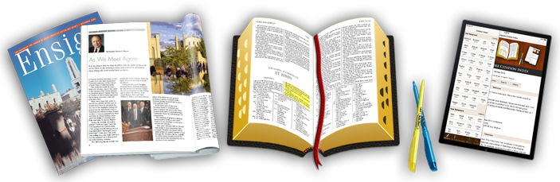

<!DOCTYPE html>
<html>
<head>
    <meta name="viewport" content="initial-scale=1.0, user-scalable=NO" />
    <title>Scripture Citation Index</title>
    <link rel="stylesheet" type="text/css" href="ioshelp.css">
    <script type="text/javascript">
        function scrollOverview() {
            scrollTo('overviewTarget');
        }
        function scrollSearch() {
            scrollTo('searchTarget');
        }
        function scrollHistory() {
            scrollTo('historyTarget');
        }
        function scrollTo(name) {
            var targetElement = document.getElementById(name);
            targetElement.scrollIntoView();
        }
    </script>
</head>
<body><a name="top" /><div id="banner"></div>
<div id="btitle"></div>
<h2>Version 4.0.0</h2>
<h3>By Stephen W. Liddle and Richard C. Galbraith</h3>
<center><p align="center"><a href="#overview" class="button" id="overviewButton">Overview</a>
    <a href="#search" class="button" id="searchButton">Search</a>
    <a href="#history" class="button" id="historyButton">History</a></p></center>
<a name="welcome" id="welcomeTarget" /><h2 class="sect">Welcome</h2>

<p>Thank you for installing the Scripture Citation Index app.  This is the mobile version of
    scriptures.byu.edu.</p>
<p>We hope you find this app useful.  We appreciate your feedback.  Please rate this app,
    and if you have suggestions or questions, contact us by email
    (scriptures@byu.edu).  Please do contact us if you find any bugs.
</p>
<p>New in version 4.0.0:
<ul>
    <li>iOS 13 support</li>
    <li>Experimental MacOS support</li>
    <li>October 2019 conference updates</li>
</ul>
</p>
<p>New in version 3.9.8:
<ul>
    <li>April 2019 conference updates</li>
</ul>
</p>
<p>New in version 3.9.7:
<ul>
    <li>October 2018 conference updates</li>
    <li>You can now choose to open scriptures and talks in Gospel Library instead of
        this app.  Use the system Settings app to control this feature.  The feature is
        disabled by default.</li>
    <li>There is now a button linking to the Settings app in the upper-left corner
        of the Citation Index and Library tabs (at the top level only).</li>
    <li>The search feature has been redesigned to support easy search-type selection,
        including &ldquo;All Words&rdquo;, &ldquo;Any Words&rdquo;, and
        &ldquo;Exact Phrase&rdquo;.  So users no longer need
        to know Lucene syntax to perform these types of searches.</li>
</ul>
</p>
<p>New in version 3.9.6:
<ul>
    <li>April 2018 conference updates</li>
    <li>Improvement to bookmark feature: the bookmarks and history
        are now accessible from a button in the upper-right on the
        navigation bar</li>
</ul>
</p>

<a name="overview" id="overviewTarget" /><h2 class="sect">Overview</h2>
<p>Welcome to the Scripture Citation Index.  This index links from scriptures
    to the general conference talks, <i>Journal of Discourses</i> speeches, and
    writings in <i>Teachings of the Prophet Joseph Smith</i> that cite those
    scriptures.&nbsp; So, for example, suppose you want to know who has cited
    1&nbsp;Ne.&nbsp;3:7 in general conference; tap on the First Nephi button
    followed by the 1&nbsp;Ne.&nbsp;3 button; there you'll find the answer.&nbsp;
    Who has quoted Matt.&nbsp;5:48?&nbsp; Use the New Testament index to find out.</p>

<p>We have indexed the scriptures cited by speakers in General Conference
    of The Church of Jesus Christ of Latter-day Saints
    between 1942 and the present, and those cited by speakers recorded in the
    <i>Journal of Discourses</i> between 1839 and 1886.&nbsp; The citations in
    <i>Teachings of the Prophet Joseph Smith</i> come from the special edition,
    <i>Scriptural Teachings of the Prophet Joseph Smith</i>, edited by Richard C.
    Galbraith and published by Deseret Book in 1993 (ISBN 0875796478).</p>

<p>To begin, tap on one of the books and chapters in the index and you'll see
    a list of references for verses in that chapter.&nbsp; A reference looks like
    this: <b>2 Pet. 1:4</b>.  When you select the <b>2 Pet. 1:4</b> item, you will see
    a list of citations for 2 Peter chapter 1 verse 4.  Citations occur in three forms.</p>

<p><b>1. General Conference:</b></p>
<div class="list"><b>2006&ndash;A:114, James E. Faust</b><br /><small>Your Light&mdash;a Standard to All Nations</small></div>
<p>&ldquo;2006&rdquo; is the year of the conference, &ldquo;A&rdquo; means April (or &ldquo;O&rdquo; for October),
    &ldquo;114&rdquo; is the page number in the <i>Ensign</i> (1971&ndash;present) or <i>Conference Reports</i> (1942&ndash;1970).
    &ldquo;James E. Faust&rdquo; is the speaker name, and the talk title appears in smaller
    text on the second line.</p>

<p><b>2. Journal of Discourses:</b></p>
<div class="list"><b>JD 10:194a, Brigham Young</b><br /><small>Knowledge, Correctly Applied, Etc.</small></div>
<p>&ldquo;10&rdquo; means volume 10 of the <i>Journal of Discourses</i>, &ldquo;194&rdquo;
    is the page number, &ldquo;a&rdquo; indicates the left column (or &ldquo;b&rdquo; for the
    right column), &ldquo;Brigham Young&rdquo; is the speaker name, and the discourse
    title appears in smaller text on the second line.</p>

<p><b>3. Teachings of the Prophet Joseph Smith:</b></p>
<div class="list"><b>TPJS 163, Joseph Smith</b><br /><small>Teachings of the Prophet Joseph Smith</small></div>
<p>&ldquo;163&rdquo; is the page number in <i>Teachings of the Prophet Joseph Smith</i>.</p>

<p>In general conference talks, <i>Journal of Discourses</i>, and <i>Teachings of the Prophet Joseph Smith</i>,
    synchronization arrows ()
    appear to the left of each scriptural reference. Tapping on these arrows
    will synchronize the citation index to display all other occurrences
    of that scripture.</p>

<p>In <i>Journal of Discourses</i> talks, pages and columns are separated
    by yellow (left column, <u>a</u>) or blue (right column, <u>b</u>) markers.
    Within each marker are two icons.  The left icon ()
    brings up a PDF copy of the printed page; the right icon ()
    brings up the BYU Library digital scan of the original.</p>

<p><b>Bookmarks and History</b></p>
<p>You can bookmark a talk by tapping the action button in the upper-right corner of the
    toolbar and selecting "Add Bookmark" while you are viewing a talk.  <!-- You can update
a bookmark to point to a new position or a different talk by selecting the
"Update Bookmark" action instead.  -->
    These features are only enabled when you are
    currently viewing a talk.  Bookmarks track both a talk and your scroll position
    within the talk.</p>
<p>The app automatically tracks the last 100 talks you have viewed.  You can
    view a talk in the history by tapping the History button on the tab bar.</p>

<a name="search" id="searchTarget" /><h2 class="sect">How to Search</h2>
<p>The default search style is to find documents with all words you have entered in the search box.
    You can choose either &ldquo;any words&rdquo; or &ldquo;exact phrase&rdquo; instead.
    This app uses the open-source Lucene search engine, so queries use the Lucene
    syntax, which is a lot like Google's.
    If you use special characters like the plus or double-quote symbol, the app
    ignores the all/any/exact-phrase selector and instead uses the Lucene engine
    to process your query directly.  Here are a few advanced queries you might try:</p>
<table>
    <tr><th>Search Terms</th><th>Finds Documents &hellip;</th></tr>
    <tr><td>angels stand sentinels</td><td>Finds documents containing any combination of these words.</td></tr>
    <tr><td>+angels +stand +sentinels</td><td>Finds documents containing all three words.</td></tr>
    <tr><td>-angels +sentinels</td><td>Finds documents containing &ldquo;sentinels&rdquo; but not &ldquo;angels&rdquo;.</td></tr>
    <tr><td>&ldquo;angels sentinels&rdquo;~10</td><td>Finds documents where &ldquo;sentinels&rdquo; is separated from &ldquo;angels&rdquo; by at most 10 words.</td></tr>
    <tr><td>&ldquo;angels who stand&rdquo;</td><td>Finds documents containing the exact phrase &ldquo;angels who stand&rdquo;.</td></tr>
    <tr><td>+Uchtdorf +hope</td><td>Finds all talks from President Uchtdorf including the word
        &ldquo;hope&rdquo;. Note that this actually finds all documents that include
        the words &ldquo;Uchtdorf&rdquo; and &ldquo;hope&rdquo;, but often
        documents containing the word &ldquo;Uchtdorf&rdquo; are his talks.</td></tr>
    <tr><td>angel*s</td><td>Finds documents containing any word starting with &ldquo;angel&rdquo; and ending with &ldquo;s&rdquo;
        (e.g., &ldquo;angels&rdquo;, &ldquo;Angeles&rdquo;). The <b>*</b> wildcard matches any
        combination of 0 or more letters.</td></tr>
    <tr><td>s?nd</td><td>Finds documents containing any 4-letter word starting with &ldquo;s&rdquo; and ending with
        &ldquo;nd&rdquo; (e.g., &ldquo;sand&rdquo;, &ldquo;send&rdquo;). The <b>?</b> wildcard matches exactly
        one letter.</td></tr>
</table>
<p>Searches are case insensitive. The <b>*</b> wildcard may not appear as the first letter of a search
    term, and both <b>*</b> and <b>?</b> wildcards may not be used in phrase and proximity searches.
    For example, the queries &ldquo;angel*s stand&rdquo;~5
    and &ldquo;s?nd here&rdquo; both will produce no results.</p>
<p>Because of performance issues, if your search produces more than 500 results, we only
    display the first 500 talks or scriptures that match.  Go to the web version of the
    Scripture Citation Index at https://scriptures.byu.edu if you want to access all the results
    for large searches.</p>

<a name="history" id="historyTarget" /><h2 class="sect">History</h2>
<p>The Scripture Citation Index was first created in paper form by Richard Galbraith,
    a faculty member at Brigham Young University (BYU).  The index was made into a web site and corresponding mobile apps
    by Stephen Liddle, also a BYU faculty member.  We've had help from many great BYU students
    through the years working on various aspects of this project.  We acknowledge
    Chris Clark's role in helping develop the initial version of this iOS app.  Porter Hoskins
    and Brendan Kingsford helped with the iOS 7 version of the app.  Tyler Mabey helped with
    version 3.9.6.  An Android version of the
    app is also available.  Brandon Petersen is the graphics designer who created the visual
    elements for version 2 of the app.</p>

<p>Scripture Citation Index, Copyright &copy; 2010-2020, Richard C. Galbraith and Stephen W. Liddle.  All rights reserved.</p>

<p>Linked materials published on ChurchofJesusChrist.org, Copyright &copy; 1971-2019, Intellectual Reserve, Inc.</p>
<p>This app is not an official publication of The Church of Jesus Christ of Latter-day Saints.
    It has an embedded web browser that
    pre-caches and presents materials downloaded from ChurchofJesusChrist.org.  We present the text of talks as published
    by ChurchofJesusChrist.org.  We highlight citation links and &ldquo;inline&rdquo; the footnotes found at the end of
    talks in order to make the citation links more prominent within the context of the talk.
</p>
<p>We also link to the first edition <i>Journal of Discourses</i> from
    the L. Tom Perry Special Collections, Harold B. Lee Library,
    Brigham Young University. The library
    provides further access to other important scanned texts and
    manuscripts at the Lee Library digital collections.</p>
<script type="text/javascript">
    document.getElementById('overviewButton').onclick = scrollOverview;
    document.getElementById('searchButton').onclick = scrollSearch;
    document.getElementById('historyButton').onclick = scrollHistory;
</script>
</body>
</html>